恰逢618 ，推荐一些即实惠又好用的东西
1. 盒马的虾仁
分量有 150g，足够炒菜，而且还是开背过的，基本就是解冻后就能很快烹饪，快速出锅，实在是居家必备。

2. 小米（MI）Xiaomi Sound Move 蓝牙音箱
不仅支持小爱同学，又支持蓝牙，同时支持 AirPlay 2，而且还能有线连接，做电脑的外置音响用。
做这款的产品经理真的是奇才，把各式各样的功能都缝合到一款产品上，目前用下来半年多的感受也是不错。
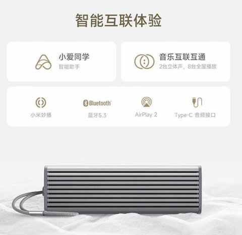
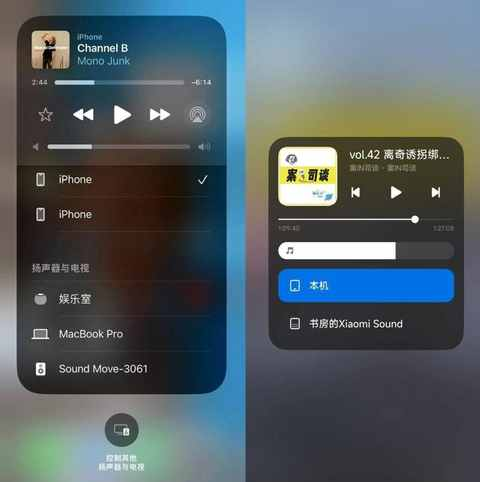
3. 小米（MI）米家充气宝
不用犹豫，任何时候都值得拥有，习惯了电动充气的感受，就回不去打气筒啦，现在已经是第三代产品。
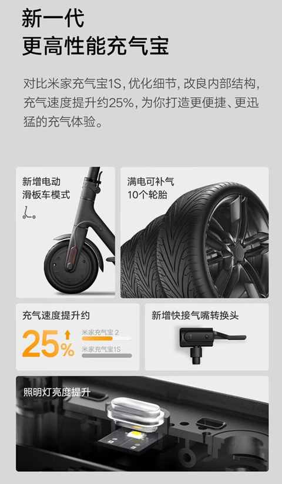
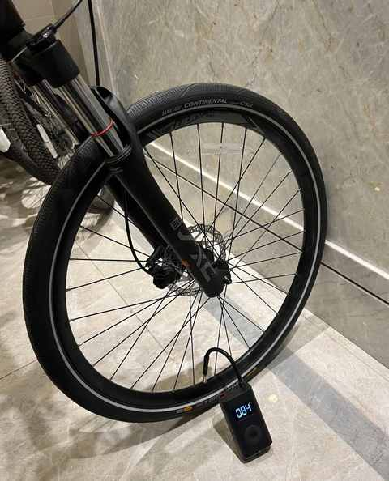
4. 过期杂志
杂志如果一直追最新的，其实不比买书便宜，甚至更贵，不过如果现在 6 月份买年初 1-3 月份的杂志，那至少能用现在的价格买之前的 2-3 本。
杂志的内容还有一个特点，里面的内容可以跳脱于时效性，也不会去煽动用户情绪，反而在阅读的时候能有更多角度去思考当时发生的一些事情。
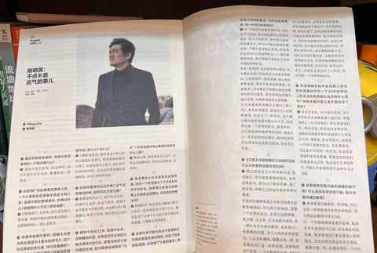
5. 实体书
虽然现在 90% 的时候都是看电子书，但依然不会放弃实体书，有时候看了电子书之后，也会再买一本实体书收藏，买实体书送人也是一个很好的礼物。
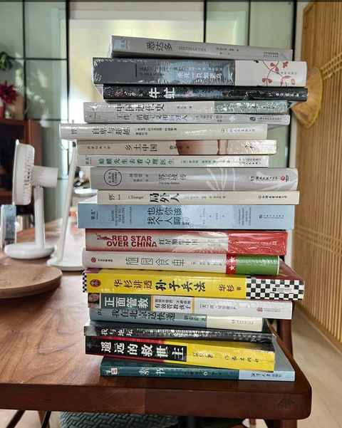
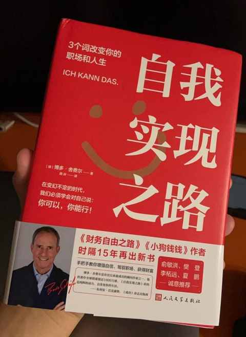
6. 迪卡侬的二手童车
也是当时儿子的自行车比较小了，要换车的时候在迪卡侬的微信小程序里面发现的，居然有二手童车，再结合把他之前的自行车闲鱼卖掉，那就约等于才花了 200多，就让他换了一辆更适合的自行车。
车子是直接去迪卡侬的线下店取货的，还可以试骑，整体体验很好。
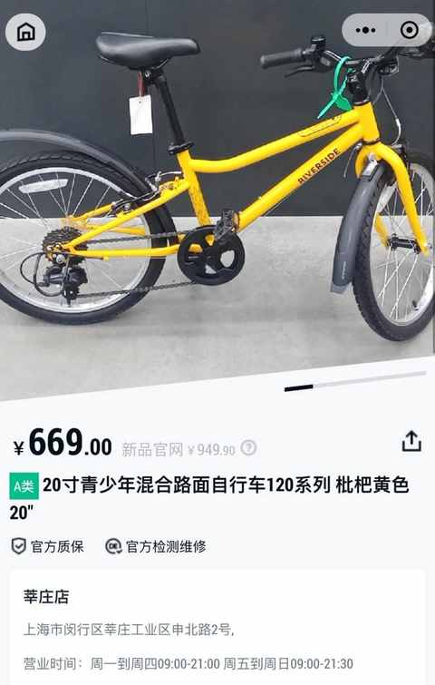
迪卡侬也是支持回收的，不过价格没有自己出闲鱼多
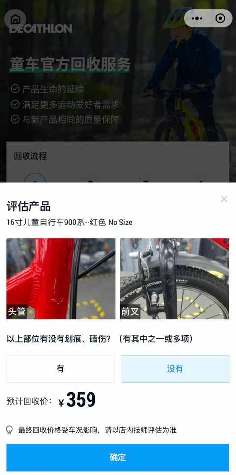
7. 淘宝的打印服务
这张是儿子画的我，老婆在某宝打印出来，然后挂在书房里面的，有时候看看还挺有意思的。
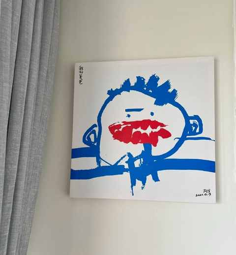
8. 携号转网
如果你对目前的运营商并不满意，不妨试试携号转网，我现在的月租费用是 29.9 元，每月 20G 流量，是从联通转到移动的。
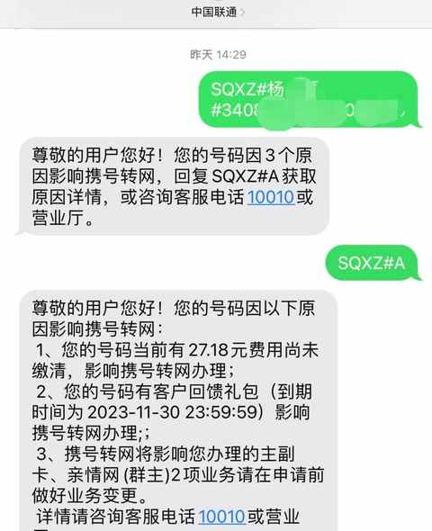
9. 无糖碳酸饮料
除了可乐，还有雪碧，健力宝等等，现在都有无糖的，而且比什么森林便宜不少。
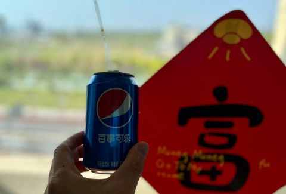